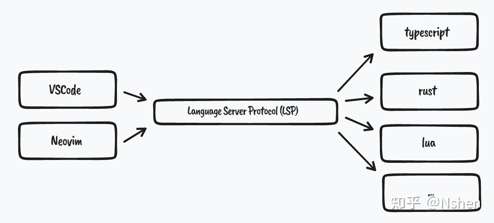

其實我們每天都在用它，只是我們自己不知道。
什麼是 LSP？
一個協議（Protocal），把程式編輯器分為 Sever 跟 Client 兩個部分：

就跟網頁開發中的前後端一樣，後端才是那個真正幫你檢查語法或格式是否正確的人，而前端則是負責幫處理你眼前畫面的那個人。
Neovim 內建就有包含 client 端的部分，可以讓你用一些 LSP 相關的 API 來顯示語法錯誤、高亮醒目等等的功能。
至於 server 的部分則需要自己安裝，以前端來說的話會用 npm install -g typescript-language-server 來處理。不過多虧有人寫了 nvim-lsp-installer ，所以可以省下自己安裝的功夫。
推薦網站
實際配置
1. 安裝必要套件
1 | use "neovim/nvim-lspconfig" |
2. 用 lsp-installer 安裝想要的 language server
1 | :LspInstallInfo |
3. 寫配置檔（setup）
這邊先說個概念，理論上每一個語言都會有不同的 setup，所以如果你想把檔案結構拆的比較細的話，就會有蠻多檔案的。因此這邊為了方便理解先全部寫成在一個檔案裡：
1 | -- lua/user/setup |
附註：其實 lspconfig 主要的用途就是讓你可以用比較簡單的方式來處理 code 而已，他本身是沒有任何 language server client 的功能的，詳細可以參考官方的 wiki
最後看到有出現語法檢查的效果就成功了。
關於 lsp_installer.on_server_ready()
在一些舊的設定中你可能會看到這樣的寫法：
1 | local status_ok, lsp_installer = pcall(require, "nvim-lsp-installer") |
官方現在已經不建議這樣寫了，可以到這個 issue 中參考詳細內容。
現在建議的寫法：
1 | -- 當作這行不存在（除非你想設置其他 config） |
查看 LSP 連結狀態
當你想寫一些配置的時候你可能會需要知道 client（一個 table）相關的資訊，這時候可以用 :lua print(vim.inspect(vim.lsp.buf_get_clients())) 來查看（這個很有用）。
我的 LSP config 快捷鍵配置
1 | local function lsp_keymaps(bufnr) |